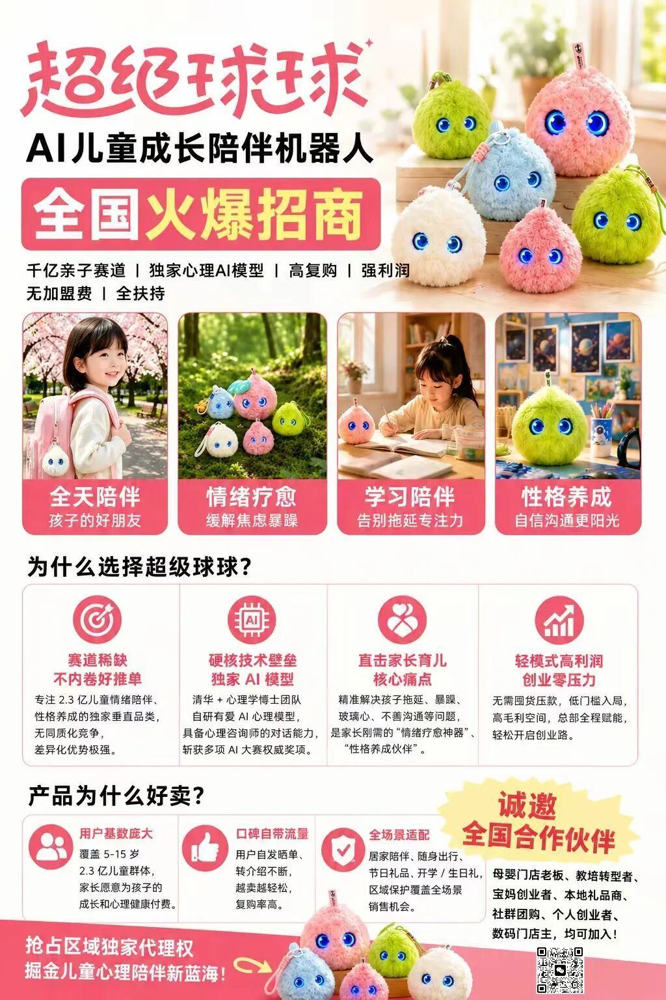
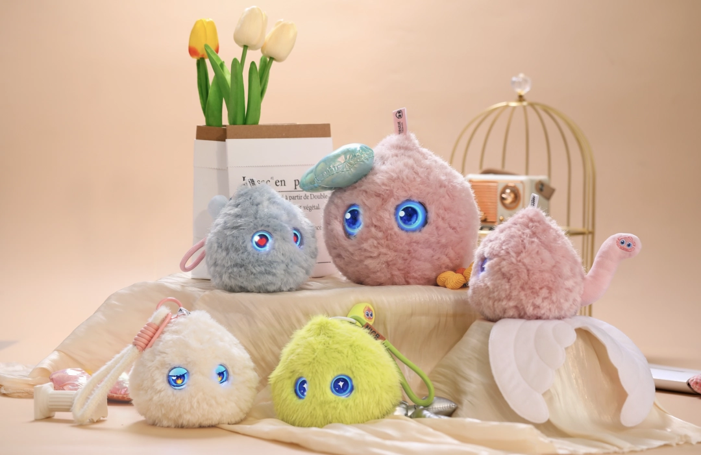
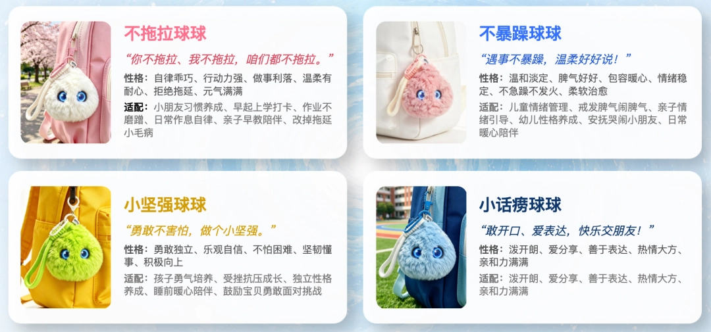
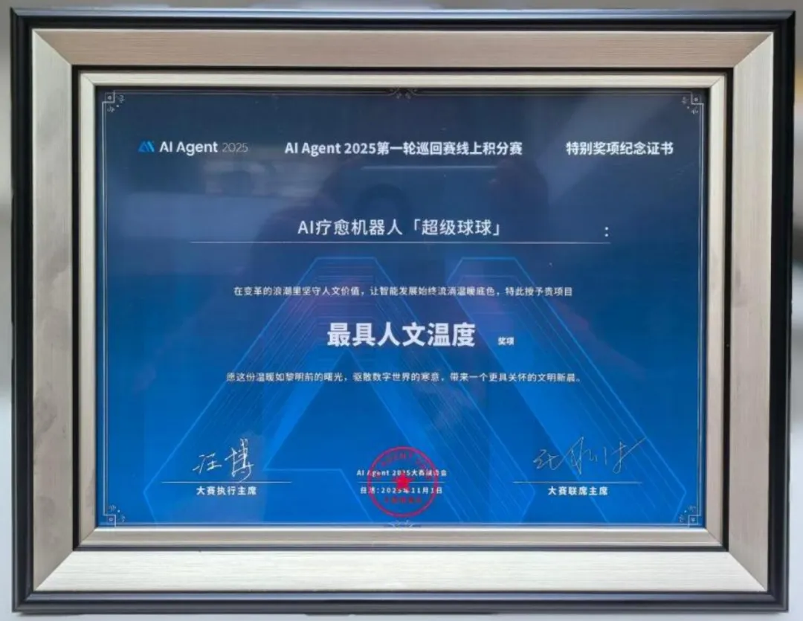
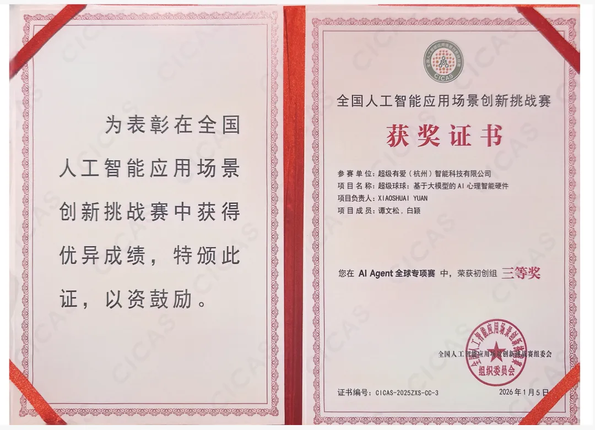
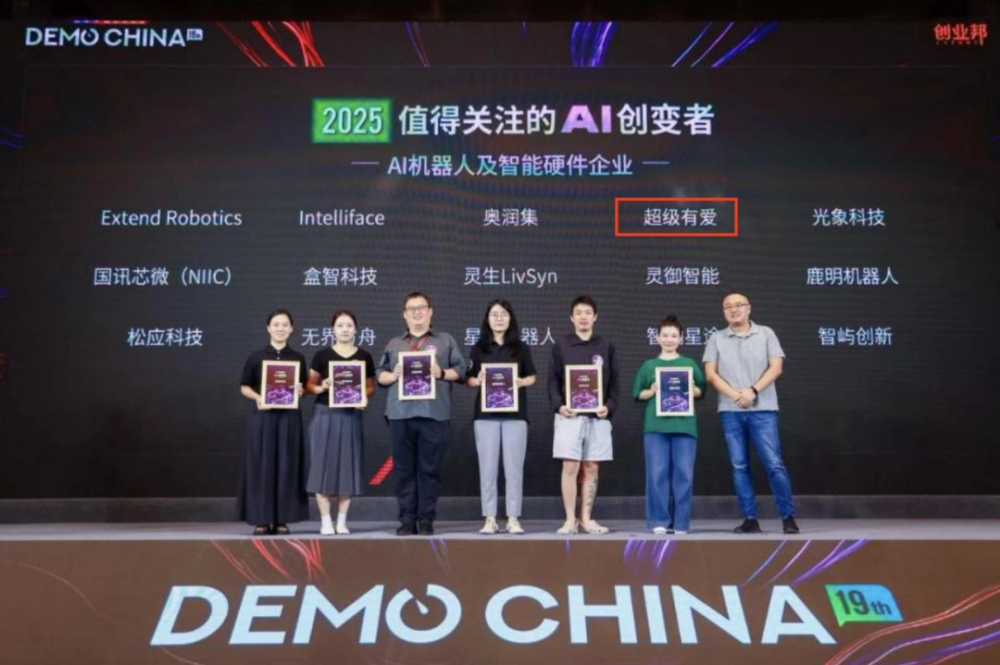
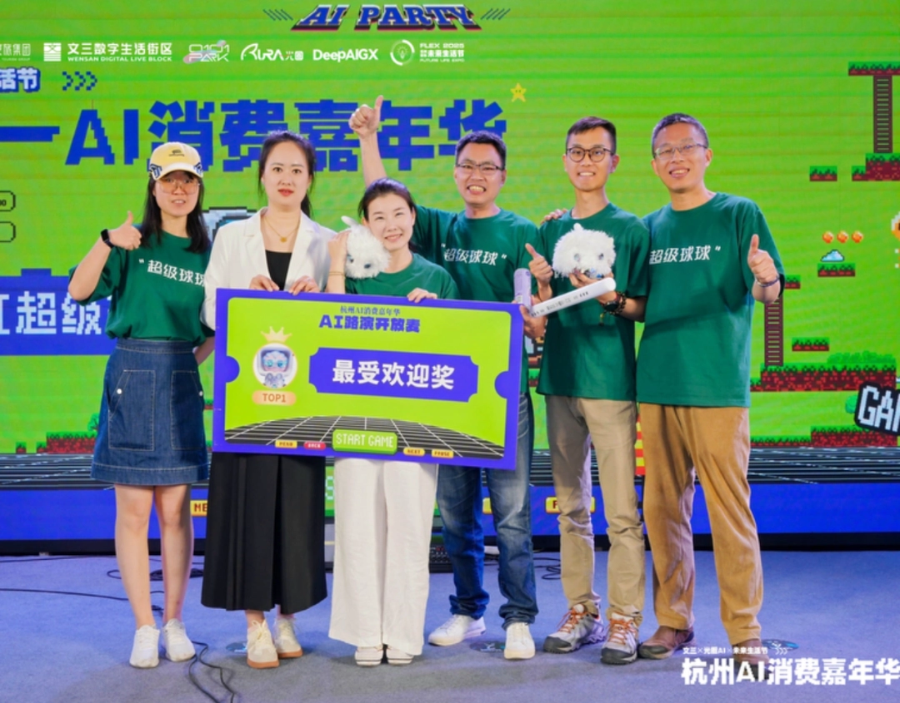

作为国内⾸款AI⼉童成⻓陪伴机器⼈超级球球正式开放全国渠道招募PART 01产品魅⼒：孩⼦的第⼀个AI好朋友⼤球球Superbot｜情绪陪伴·情绪疗愈主打深度情绪陪伴，情绪治愈，专注孩⼦⼼理健康成⻓。软糯亲肤，可抱可睡，⽀持声控闭眼模式；灵动⼤眼，实时情绪共情；
⼩球球Superbot mini｜四⼤正向成⻓⼈设四款个性鲜明的萌趣伙伴不拖拉、不暴躁、⼩坚强、⼩话痨，精准匹配不同孩⼦的性格与陪伴需求。掌⼼⼤⼩，随⾝可带，居家、出⾏、学校多场景覆盖。


PART 02技术壁垒、产品荣誉区别于市⾯上通⽤⼤模型的传统玩具或单纯娱乐化的AI玩具，超级球球搭载由⼼理学专家郭凯燕博⼠与清华⼤学等博⼠团队联合打造的“有爱AI⼼理专属模型”，具备精准情绪识别、深度共情对话、⻓期个性化记忆等专业能⼒，构建起“情绪感知→科学评估→正向⼲预→⻛险预警”的完整⼉童⼼理服务闭环，凭借独特的创新优势，⽬前产品已荣获多个奖项：1、AI Agent 2025⼤赛三等奖（1150⽀队伍前46强）及“最具⼈⽂温度奖”



2、创业邦「2025值得关注的AI创变者」3、杭州⽂三AI TED科技路演「最受欢迎奖」

PART 03备受政府、媒体和⾏业多⽅关注超级球球不是“⼜⼀个AI玩具”，⽽是⼉童成⻓陪伴赛道的开创者，差异化定位带来天然的竞争壁垒，也得到政界、媒体和⾏业的⼤量关注：杨浦以科技消费联动⾸发经济，让更多硬核产品⾛进市⺠⽣活在⼴州，全球买家如何被AI“圈粉”？
超级球球：⼀个永不离线的倾听者“超级球球”参展杭州AI年货市集，获权威媒体报道AI情绪疗愈机器⼈“超级球球”参展第⼋届进博会，获多位中外贵宾亲⾝体验从余杭⾛向CES：超级球球荣膺梦想⼩镇周年伴⼿礼“超级球球”参展2026CES展，探路海外市场

PART 04诚邀全国合作伙伴⺟婴⻔店⽼板：补充⾼客单、⾼复购的差异化产品教培转型者：寻找轻资产、⾼⽑利的转型⽅向宝妈创业者：时间灵活、产品⾃⽤+分享双重价值本地礼品商：送礼⾼频、场景丰富的优质选品社群团购主理⼈：⼝碑产品、⾃发传播属性强个⼈创业者：低⻔槛⼊局，全程扶持如果你认同超级有爱的使命，如果你看好⼉童⼼理健康赛道的未来，如果你想和⼀群有温度的⼈⼀起做⼀件有价值的事欢迎成为超级球球的区域合作伙伴，抢占区域独家代理权，掘⾦⼉童⼼理陪伴新蓝海。